00全景与读法
2026 上半年这批旗舰，真正的竞赛不在"堆参数"，而在如何在规模与长上下文下省下算力、显存、带宽。这条主线贯穿四个层面：注意力（怎么不为长上下文付二次方代价）、MoE（怎么把算力花在关键处）、优化器（怎么每步更高效）、后训练 + 训推一致性（怎么把能力稳定地灌进模型而不在 RL 时失稳）。一个会反复出现的判断先放这：架构创新大多是"效率 / 规模使能"，不是"能力魔法"——等算力下通常只有 5–15% 的差距，绝对能力更多由规模、数据、后训练决定。
每一节固定三段：叙事怎么说（左栏，灰，行业或厂商的常见表述）/ 证据是什么（右栏，橙，原文核实到的一手或二手证据）/ 本站判断（下方色块）。数字按来源分三类：第三方 独立测量或多方一致、自报 厂商技术报告或官方口径（原文的"确证"指读过技术报告 / 官方 config，仍属自报口径）、推断 本站或原文的分析性判断。原文标注"二手 / 待报告 / 图反推"处本文一律保留——MiniMax M3 截至成稿技术报告尚未发布，其结构 / 训练细节为二手与图反推。
一条贯穿全文的线索：离散选择操作是训推一致性的共同风险点——DSA / MSA 的 top-k、MoE 路由在训推两侧极易因数值差异分叉。这解释了 GQA + FlashAttention 为何比 MLA 更受生产团队欢迎，也解释了为何算子融合与训推一致性是"同一本账"。
01一句话全局图景：架构 ≠ 能力
竞赛主线是在规模与长上下文下省算力、显存、带宽。Qwen3.6 的 27B 稠密模型在编码上打败自家 397B MoE，是"架构 + 训练 > 堆参数"的最好注脚。
叙事怎么说
新一代旗舰的领先来自架构创新——某种新注意力或新 MoE 设计带来了能力跃升。
证据是什么
推断 架构创新等算力下通常只有 5–15% 的差距；自报 Qwen3.6-27B 稠密在 SWE-bench Verified 77.2 胜自家 397B MoE 的 76.2，并在 Terminal-Bench 2.0 上追平 Claude Opus 4.5。
本站判断读架构综述的正确姿势是把每个机制的收益归到"效率 / 规模使能"一栏，而不是"能力"一栏。对 RL-on-NPU 的含义是：架构选择首先决定的是推理与 rollout 的成本曲线，能力差异应主要到后训练配方里找。
02注意力的三大家族
标准注意力有两个长上下文痛点：计算上 O(n²)、显存上 KV cache 随长度线性增长。2026 这批模型的回答可归为三个根本不同的家族，外加一条与注意力正交的 MoE 创新轴：① 全注意力（MLA 或 GQA，attend 全部，O(n²)，代表 Kimi-K2.6）；② 稀疏选择（只选一部分 token / 块再算，次二次，代表 DeepSeek-V4 CSA / HCA、GLM-5 DSA、MiniMax M3 MSA、MiMo SWA）；③ 线性注意力混合（线性层 + 少量全注意力层，O(n)，代表 Qwen3.6 Gated DeltaNet）；（正交）MoE 算力分配（LongCat-Flash 零计算专家）。家族 ② 内部还能沿两个正交轴细分：KV 底座（GQA vs MLA）× 稀疏方式（压缩 / 不压缩、选 token / 选块）。

这张图怎么读
数每个家族下的叶子：全注意力一个、线性混合一个、稀疏选择四个——七款旗舰里有四款选了同一家族，这是 2026 H1 的主流；但四个叶子彼此并不相同（第 04 节要沿 KV 底座 × 稀疏方式两个轴再拆一次）。
根节点的两条出边是理解 LongCat 的关键：它的注意力是标准 MLA，创新全在右边那条 MoE 轴上。两条轴正交意味着任何一款模型的架构描述都需要两个坐标——"注意力怎么算"与"MoE 怎么花算力"——而不是一个标签。
叙事怎么说
长上下文的答案是"稀疏注意力"，各家的稀疏方案大同小异。
证据是什么
自报 七款中四款选稀疏、一款全注意力、一款线性混合、一款在 MoE 轴创新；稀疏一族内部沿 KV 底座（GQA / MLA）与稀疏方式（压缩与否、token / 块）两轴分化为四种机制。
本站判断三大家族是三种世界观：全注意力不省、稀疏选择省计算、线性混合让 KV 不随长度增长。稀疏是主流但不是共识——Kimi 坚持全注意力、Qwen 选线性，都是同期旗舰。
03底座之争：GQA vs MLA
GQA——少存、共享真实 KV 头：H 个 query 头分成 G 组，每组共享 1 个 KV 头（如 64 个 Q 头但只有 8 个 KV 头），缓存的仍是真实、完整维度的 K / V，只是数量从 H 降到 G；它是 MHA → MQA（太激进）→ GQA（折中）这条线的折中点。MLA——压成 latent、用时还原：不减头数，把每个 token 的 K、V 压成一个低秩 latent 向量（如 512 维）缓存，算注意力时再上投影还原成各头的 K / V；缓存的是压缩表示，维度可比 GQA 还小、且与头数无关。代价是要处理解耦 RoPE（位置编码与上投影吸收不兼容，故拆成"无位置压缩部分"+"带位置 rope 部分"，即 config 里 qk_nope + qk_rope 的由来）。
效果对比（确证 + 解读）：等 KV 预算下 MLA 表达力严格更强（MLA 能表达 GQA、反之不行：GQA 是"复制 K / V"，MLA 是"每头不同的上投影"）。但"理论更强"不自动兑现——GLM-5 报告里，裸 Muon 下 MLA 追不平 GQA-8，他们做了 Muon Split 才追平；同时 MLA 的 cache（576 维）比 GQA-8（2048 维）小约 3.5×。真正的分水岭不是效果而是工程：GQA 能直接复用 FlashAttention / vLLM / SGLang、实现简单、对 RL 训推一致更友好；MLA 压得更狠但要背 latent KV 的 kernel 工程债。所以 MiMo、MiniMax M3 选 GQA（production-ready 最低风险），DeepSeek 全系、GLM、Kimi、LongCat 选 MLA（极致压缩）。

这张图怎么读
两条链的前两个节点是机制（怎么存），后两个节点是工程后果（要付什么），第五个是选择者。分水岭在第三、四个节点：GQA 那边写的是"可直接复用 FlashAttention""对 RL 训推一致友好"，MLA 那边写的是"解耦 RoPE""kernel 工程债"——原文的结论"分水岭不是效果而是工程"就是这两组节点的对照。
选择者一栏也有规律：选 GQA 的两家（MiMo、MiniMax M3）正是原文所说追求 production-ready 最低风险的团队；选 MLA 的四家都在追求极致 KV 压缩（576 维对 2048 维约 3.5×，自报 GLM-5 报告）。对昇腾栈的含义：GQA 的数值路径更标准，是异构训推一致的低风险起点。
叙事怎么说
MLA 是更先进的注意力，GQA 是上一代方案；选 MLA 即得到更强表达力。
证据是什么
自报 确证：等 KV 预算下 MLA 表达力严格更强，cache 576 维对 GQA-8 的 2048 维小约 3.5×；但 GLM-5 报告显示裸 Muon 下 MLA 追不平 GQA-8，需 Muon Split 配套。第三方 GQA 直接复用 FlashAttention / vLLM / SGLang；两家生产团队选 GQA、四家选 MLA。
本站判断一句话：GQA 改"存几个头"，MLA 改"怎么表示 KV"；等预算下 MLA 略占理论上风但需配套，选择真正取决于愿为压缩背多少工程债。"理论更强不自动兑现"（需 Muon Split 才追平）是本节最值得记的证据——它把优化器与注意力底座的选择耦合在了一起（第 08 节）。
04稀疏选择家族：同源于 NSA，四种分化
家族 ② 全都能追溯到 DeepSeek 的 NSA（Native Sparse Attention）的"选块"思想——只对相关的一部分上下文做注意力。NSA 本体有三条并行分支（压缩 + 选择 + 滑动窗口）加一个学习门控，后续各家把它沿不同方向简化。
| 方法 | KV 底座 | 选择粒度 | 是否压缩 KV | 注意力在哪算 | 代表 |
|---|---|---|---|---|---|
| DSA | MLA | token 级 | 是（latent） | 真实（MLA）KV | GLM-5、DeepSeek-V3.2 |
| CSA / HCA | MLA 系 / 序列压缩 | 块级 | 是（4× / 128×） | 压缩 KV | DeepSeek-V4 |
| SWA 混合 | GQA | 固定窗口 | 否 | 真实 KV（局部） | MiMo |
| MSA | GQA | 块级 | 否 | 真实 KV | MiniMax M3 |
DSA（DeepSeek Sparse Attention）：在 MLA 上加一个轻量 lightning indexer，为每个 query 选 token 级 top-k（如 top-2048）。GLM-5 通过"从稠密 MLA 基座继续预训练"加上 DSA，称其"构造上无损"。CSA / HCA（DeepSeek-V4）：更激进——CSA 4× 压缩 + 块选择，HCA 128× 重压缩 + dense，层间交替，且每层内嵌一个未压缩的 SWA 局部分支；把 KV 压到 V3.2 的约 10%，撑起 1M 上下文。MiMo 的 SWA 混合：最简，纯 GQA + 60 层滑动窗口（窗口 128）+ 10 层全局（6:1）+ 可学习 attention sink；一个反直觉的消融结论：窗口 W=128 反而比 W=512 好，因为小窗口起正则作用、并强制"局部归 SWA、长程归全局层"的清晰分工。MSA（MiniMax M3）：= "DSA 的动态块选择 + SWA 的不压缩"。两阶段"先挑再算"：索引分支（单头共享 index key + Block Max Pool → TopK 选块，近零成本）→ 稀疏分支（对选中块在真实未压缩 KV 上算真注意力）。同组 query 共享一份选择，FlashAttention 可复用。稀疏率约 6–7%，1M 下有效感受野约 60–70k。（注：MSA 机制来自架构图反推，待官方报告证实。）

这张图怎么读
四个分支各自"删掉了 NSA 的哪一部分"是读图要点：DSA 保留了选择、去掉了压缩分支的独立性（在 latent 上选 token）；CSA / HCA 把压缩推到极致（4× / 128×）并保留局部 SWA；SWA 混合只留滑窗、去掉选择；MSA 只留选择、去掉压缩。NSA 的三分支在四个后继里没有一家全部保留——各家都是做减法。
再按底座分两列：左两个（DSA、CSA / HCA）建在 MLA 上、都压缩；右两个（SWA、MSA）建在 GQA 上、都不压缩。这与第 03 节的选择者一致：选 GQA 的团队连稀疏方式也选了"不压缩、真实 KV"的保守路线。

这张图怎么读
左侧的 "N×" 与 "1×" 就是原文所说的 6:1——N 个 SWA block 配 1 个 GA block 构成一个大块，M 个大块叠成主干（原文口径：60 层滑窗 + 10 层全局）。SWA 与 GA 两种 block 的内部结构完全相同（RMSNorm、注意力、RMSNorm、Sparse MoE），唯一的差别是注意力算子——这正是原文说 MiMo 方案"最简"的原因：不引入压缩、不引入 indexer，只在 attention 层换算子。
右侧 MTP block 用的也是 Sliding Window Attention 而非全局注意力，且 FFN 是 Dense 而非 MoE——多 token 预测分支被刻意做轻。对 RL 的意义：SWA 层的 KV 只保留窗口内（128）的真实 K / V，长程信息全部由稀少的 GA 层承担，这一分工是原文引用消融"W=128 优于 W=512"的结构性解释——小窗口强制局部与长程的职责分离。

这张图怎么读
三个面板的横轴都是长度，纵轴都是成本，读法是看两条曲线的斜率而非端点：GQA 三条都随长度线性或超线性上升（中面板 prefill 是二次曲线），MSA 三条几乎水平——这就是原文"稀疏率约 6–7%"的可视化：有效感受野约 60–70k 后不再随总长度增长。
三个倍数递减（28.4× → 14.2× → 7.6×）本身有信息：FLOPs 减少最多，prefill 延迟次之，decode 延迟最少——索引分支（Block Max Pool + TopK）的固定开销与访存在 decode 侧占比更高，稀疏带来的收益被稀释。对 RL rollout 的含义：rollout 是 decode-bound 负载，从这张图应取右面板的 7.6× 而非左面板的 28.4× 作为预期。所有数字为厂商自报，且 MSA 机制本身待技术报告证实。

这张图怎么读
这是 DSA 路线的成本证据（GLM-5 与 DeepSeek-V3.2 同属 DSA）。两条线在原点附近几乎重合——短上下文时 lightning indexer 的开销与稠密注意力相当，甚至 prefill 面板里橙线在 0–8K 略高于蓝线；差距从约 16K 之后才拉开，到 128K 时 prefill 差约 3.7×、decode 差约 8.6×。
与图 5 合看：两家稀疏方案的收益都集中在 decode 与长上下文，但 DSA 是 token 级选择、在 MLA latent 上做，MSA 是块级选择、在 GQA 真实 KV 上做——同为"次二次"，工程路径完全不同。图中成本为 API 定价口径的自报数字，反映的是厂商推理栈的综合成本，不是纯算子测量。
叙事怎么说
稀疏注意力"无损"且大幅省算力，各家的稀疏率与加速倍数可以直接比较。
证据是什么
自报 GLM-5 称 DSA"构造上无损"；DeepSeek-V4 把 KV 压到 V3.2 约 10%；MiMo 消融 W=128 优于 W=512；MSA 稀疏率约 6–7%、1M 有效感受野约 60–70k（图反推，待报告）；图 5 三个倍数 28.4× / 14.2× / 7.6×、图 6 成本曲线均为厂商自报。
本站判断四种分化的差异不在"稀疏多少"而在在哪种 KV 上稀疏（压缩 latent vs 真实 KV）与按什么粒度选（token vs 块 vs 固定窗口）。加速倍数不可跨家比较：图 5 是 MSA 对同底座 GQA，图 6 是 DSA 对稠密 MLA 的 API 成本，基线不同。
05稀疏之争：三家一手证据互相冲突
一个重要且未解的争论：稀疏注意力哪种长上下文最强，三家一手证据互相冲突。GLM-5（选 DSA）在检索 / RULER 上证明 DSA 无损、SWA 有 gap；MiMo（选 SWA）在 GSM-Infinite 带噪长推理上证明 hybrid SWA 胜过 DSA、称 DSA"在带噪长推理上有内在劣势"；M3 的 MSA 想两头取优。每家的消融都偏向自家选择。
叙事怎么说
某一种稀疏方案（DSA 或 SWA）已被证明是长上下文的最优解。
证据是什么
自报 GLM-5：RULER 上 DSA 无损、SWA 有 gap；自报 MiMo：GSM-Infinite 上 hybrid SWA 胜 DSA；自报 M3：MSA 兼顾。第三方 无统一第三方复测。
本站判断合理结论：DSA 强在精确检索、hybrid 强在抗噪推理、MSA 想兼顾——没有普适最优，取决于任务和长上下文模式。三家消融的评测集各不相同（RULER vs GSM-Infinite），结论冲突首先是评测集的冲突；别被任何单方消融带跑。
06第三条路：线性注意力（Qwen3.6）与 MiniMax 的反向演进
Qwen3.6 走了和稀疏选择完全不同的路：线性注意力混合。它用 Gated DeltaNet（一种 O(n) 线性注意力，delta-rule 状态更新 + 门控，类似一个高效的循环记忆系统）与标准 Gated Attention 按 3:1 交错——27B 是 64 层 = 16 块 ×（3 个 DeltaNet 子层 + 1 个全注意力子层）。四分之三的层用线性注意力扛长程效率，每四层一个全注意力"锚定"精确的 token 级推理。线性注意力的 KV 不随长度增长，这是它和稀疏选择世界观上的根本区别。值得对照的是 MiniMax 走了反方向：M1 用过线性（Lightning Attention）、M2 整代回到全注意力（官方专门发博客《Why Did M2 End Up as a Full Attention Model?》）、M3 又回归稀疏。Qwen 投入线性、MiniMax 放弃线性——同一时间两条路的分歧，说明这个方向远未定论。另外 Qwen3.6-27B 是稠密模型，却在 SWE-bench Verified 上（77.2）打败自家 397B MoE（76.2），并在 Terminal-Bench 2.0 上追平 Claude Opus 4.5。

这张图怎么读
左子图的两个叶子各承担一种职能：DeltaNet 承担效率（KV 不随长度增长），Gated Attention 承担精度（锚定 token 级推理）。3:1 意味着 KV cache 的绝大部分随长度增长的部分只来自四分之一的层——这是线性混合与稀疏选择在显存曲线上的根本差异：稀疏选择的 KV 仍随长度增长（只是算得少），线性层的状态是固定大小。
右子图三个节点之间是虚线而非实线——原文强调这是"回退"与"再转"，即 MiniMax 在三代之间两次改变注意力家族，并为放弃线性专门发了博客。两子图之间的"方向相反"是本节的核心证据：同一时期两家旗舰对线性注意力做出相反决策，说明该方向远未定论。
叙事怎么说
线性注意力已被证明不如全注意力 / 稀疏注意力（MiniMax M2 的回退是证据），或反过来已成主流（Qwen3.6 是证据）。
证据是什么
自报 Qwen3.6 以 3:1 DeltaNet 混合做 27B 稠密，SWE-bench Verified 77.2 胜自家 397B MoE 76.2、Terminal-Bench 2.0 追平 Claude Opus 4.5；自报 MiniMax M1 线性 → M2 全注意力（官方博客说明）→ M3 稀疏。两家同期方向相反。
本站判断Qwen3.6-27B 稠密胜 397B MoE 是"架构 + 训练 > 堆参数"最干净的实证，但它同时是线性混合与稠密训练配方的叠加，无法单独归因于线性注意力。对 rollout 引擎的含义：线性层的固定状态让 KV 显存不再是长上下文 rollout 的瓶颈，但 DeltaNet 算子在 vLLM / SGLang 及其昇腾后端的支持成熟度是选型前提（原文未评估）。
07MoE 的另一条创新轴：LongCat 的零计算专家
不是所有创新都在注意力上。LongCat-Flash 的方案全在 MoE：零计算专家——512 个真专家 + 256 个"零专家"（恒等 / 空操作），top-12 路由，用一个 PID 控制器把平均激活维持在约 27B（560B 总参里）。效果是按 token 重要性动态分配算力：简单 token 路由到更多零专家、少算，难 token 多算。这是这批模型里独一份的"动态算力"。配套的 ScMoE（Shortcut-connected MoE）把专家通信藏进计算里重叠，>100 TPS@H800。它的注意力反而是标准 MLA——说明创新可以只在 MoE 这条轴上发生，与注意力家族正交。

这张图怎么读
关键在于 top-12 是固定的而激活算力是动态的：每个 token 都选 12 个专家，但其中有几个是零专家由路由决定——零专家不计算，因此同样的 top-12 在不同 token 上的实际 FLOPs 不同。PID 控制器的作用是让"零专家的平均占比"稳定在使平均激活约 27B 的水平，防止路由集体偏向零专家（退化为少算）或真专家（退化为多算）。
ScMoE 节点解决的是另一个问题：MoE 的专家并行通信（dispatch / combine）通常暴露在关键路径上，shortcut 连接让下一层计算与本层通信重叠——>100 TPS@H800 是自报口径。对 RL rollout 的含义：动态激活使单 token 成本不再恒定，rollout 吞吐会随 prompt 难度分布漂移，与 D02 的长尾问题叠加时需要额外建模。
叙事怎么说
MoE 的创新已经收敛（细粒度专家 + 共享专家），差异只在专家数与 top-k。
证据是什么
自报 512 真专家 + 256 零专家、top-12、PID 控制平均激活约 27B / 560B 总参、ScMoE >100 TPS@H800；注意力为标准 MLA。七款中独一份的动态算力。
本站判断零计算专家把"每 token 算多少"从架构常数变成路由决策，是七款中唯一在 MoE 轴上做减法的设计。它与注意力家族正交——理论上可与任何稀疏或线性注意力叠加，原文未见有人这样做。
08优化器：Muon 家族
前沿 MoE 预训练的优化器正在从 AdamW 向 Muon 系迁移（DeepSeek-V4 用 Muon、GLM-5 用 Muon Split、Kimi-K2.6 用 MuonClip；但 MiMo 仍用 AdamW，未普适）。机制（三步）：对一个 2D 权重矩阵 W，① 攒动量 M ← μM + G；② 正交化 M——做 SVD M = UΣVᵀ，把奇异值全拍成 1，用 O = UVᵀ 替换 M（即取离 M 最近的半正交矩阵）；③ 更新 W ← W − ηO。每步真做 SVD 太贵，故用 Newton-Schulz 迭代（只含矩阵乘的多项式迭代，约 5 次）近似 UVᵀ，可跑 bf16。

这张图怎么读
主链三步里只有第二步与 Adam 不同——第一步（动量）与第三步（更新）两者形式相同，求梯度 G 的那一步在图外且完全相同。Muon 与 Adam 都是一阶方法：Muon 去掉的是 Adam 的二阶矩 v（梯度平方的滑动平均，一个一阶统计量，与 Hessian 无关），所以优化器状态只一份、省一半显存。区别只在"拿到 G 之后"：Adam 逐元素做 m/(√v+ε)，Muon 把整个矩阵正交化。
下方子图的四个节点说明"全用 Muon"从来不是它的主张：X1 / X2 是标准混合配方，X3 / X4 是大规模所需的稳定化——MuonClip 对应裸 Muon 的注意力 logit 爆炸问题，Muon Split 对应第 03 节里 MLA 在裸 Muon 下追不平 GQA-8 的问题。两个变体分别来自 Kimi 与 GLM，各自解决一个规模化障碍。
为什么正交化有用：① 它是"谱范数下的最速下降"——普通 GD 是欧氏范数下的最速下降，但权重矩阵对网络的影响由谱范数（放大能力）决定；在谱范数约束下求最速下降，最优方向恰好就是 −UVᵀ，即"用对这一层真正有意义的范数来量步长"。② 把更新在所有奇异方向上调匀（预条件）——原始梯度高度各向异性，正交化让每个奇异方向拿等量步长（更新条件数 = 1），每步用满矩阵全秩，信息利用率最高。为什么不是所有参数都用 Muon：Muon 干的事是"扔掉幅度、只留方向"，这只在"幅度是噪声"处才对。1D 参数（bias、norm 缩放、标量）没有矩阵可正交化，无定义，交给 Adam；Embedding / LM head 技术上是 2D，但每行对应一个 token，梯度稀疏且词频呈 Zipf 分布，行间幅度差异是真信号（高频 / 低频 token 本该被不同更新），正交化会把它抹平，且词表维度巨大、在 Muon 不帮忙处跑最贵的正交化，纯亏，实测 Adam 更好。所以标准配方本就是混合。
叙事怎么说
Muon 是二阶优化器，利用了 Hessian 信息；它带来约 2× 训练效率，可全面替代 AdamW。
证据是什么
第三方 Muon 与 Adam 都是一阶方法，Muon 去掉的是二阶矩 v 而非引入二阶导；自报 Moonshot 报告约 2× token 效率（setup 相关、非普适常数）；第三方 三家前沿实验室独立采用做旗舰预训练，但 MiMo 仍用 AdamW；大规模需 MuonClip / Muon Split 稳定化；RL 后训练仍以 AdamW 为主。
本站判断三条限定必须与"2×"一起引用：setup 相关、需稳定化配套、主要是预训练优势。对本看板最直接的含义是最后一条——RL 后训练仍以 AdamW 为主，Muon 的迁移尚未进入 RL 阶段，昇腾上的 RL 框架短期无需为 Muon 做适配。
09后训练范式：OPD / MOPD 的收敛
一个值得注意的收敛现象：DeepSeek-V4（OPD）和 MiMo（MOPD）独立地走到了同一配方——先用 RL 训出若干领域专家，再用 on-policy 蒸馏把多个教师合并进一个学生（token 级 reverse-KL 密集信号 + 结果奖励）。GLM-5 的"顺序 RL + 跨阶段蒸馏"思路相通（都为防灾难性遗忘 / see-saw）。两家独立收敛，强烈暗示这是正在成型的标准后训练范式。但要诚实看它的真实战果（来自 MiMo-V2-Flash 报告的一手数据）：on-policy 蒸馏在可验证域确实让学生匹配甚至略超最强教师（AIME +0.2、HMMT +1.8 超过 RL 教师），但在 agentic 搜索和主观域明显掉队（BrowseComp 比教师低 6.3、创意写作倒退 3.9）。论文宣称"全域保住教师峰值"与它自己的表相矛盾。Agentic 能力的真瓶颈也值得点明：不是算法，而是真实环境 RL 的基础设施（沙箱、并发、partial rollout）——DeepSeek-V4 的 DSec 沙箱（10 万+ 并发）、MiMo 的万级 K8s 环境，才是 agentic RL 能 scale 的关键。
叙事怎么说
on-policy 蒸馏能把多个 RL 教师的峰值能力全域保留进一个学生。
证据是什么
自报 MiMo-V2-Flash 报告一手表：可验证域 AIME +0.2、HMMT +1.8 超教师；agentic / 主观域 BrowseComp −6.3、创意写作 −3.9。第三方 DeepSeek-V4 与 MiMo 独立收敛到同一配方，GLM-5 思路相通。自报 DSec 沙箱 10 万+ 并发、MiMo 万级 K8s 环境。
本站判断OPD / MOPD 擅长收拢可验证域，agentic / 主观域仍有 gap——这是厂商报告自己的表给出的结论，比宣称更可信。agentic 能力的瓶颈在环境基建而非算法，与 D23 复现难度排序中"沙箱工程居首"一致。
10被低估的工程主线：训推一致性三层
只要做 RL，训练和推理用同一个策略算出的 log-prob 必须对得上，否则训练信号失真、容易失稳。这是整批模型共同处理、却很少被外部讨论的暗线，解法分在三个层次：算子层（DeepSeek-V4）——batch-invariant 确定性内核 + TileLang DSL，做到训推逐位一致；量化层（GLM-5）——INT4 QAT，让量化后训推逐位一致；路由层（MiMo）——R3（Rollout Routing Replay），RL 训练时复用 rollout 阶段记录的专家路由，解决 MoE 因数值精度导致的路由不一致，再配请求级 prefix cache。共同的风险点是离散选择操作（DSA / MSA 的 top-k、MoE 路由）——它们在训推两侧极易因数值差异分叉。这也是 GQA + FlashAttention 比 MLA 更受生产团队欢迎的隐性原因之一：数值路径更标准、更易对齐。

这张图怎么读
三层是三种不同位置的解：算子层在数值产生处消除差异（逐位一致），量化层让两侧用同一低精度格式（差异同源），路由层不消除差异而是把推理侧的离散决策原样回放到训练侧（绕开差异）。三家各做了一层，没有一家三层全做——原文未给三层的组合方案。
底部"共同风险"节点是全图的汇点：三层解法都在对付同一个东西——离散选择。这与第 04 节形成闭环：稀疏选择家族的 top-k 与 MoE 路由都是离散操作，越是激进的稀疏（DSA、MSA）越把这个风险带进 RL。图中三层全部是 CUDA 侧实现（TileLang、INT4 QAT、Megatron 系路由回放），D23 记录了它们在昇腾上的整体缺位。
叙事怎么说
训推一致是框架层的对齐细节，与模型架构无关。
证据是什么
自报 三家旗舰各在一层做了专门设计：V4 算子层、GLM-5 量化层、MiMo 路由层；推断 离散选择操作（top-k、MoE 路由）是共同风险，架构越稀疏风险越高；GQA + FlashAttention 数值路径更标准。
本站判断训推一致性是架构决策的隐性约束：选 MLA + DSA 意味着同时接下 latent kernel 工程债与 top-k 分叉风险，选 GQA + SWA 则两者都轻。对昇腾做 RL 的团队，这一节给出的是架构选型的优先序：数值路径越标准的架构，异构一致性的起点越好。
11RL 里那些可以融合的算子
RL 相比 SFT 多出一整条 logits → log-prob → ratio → loss 的长尾计算链，几乎全是可融合的逐元素 / 规约操作。按杠杆从高到低：
叙事怎么说
算子融合是纯性能优化，融得越多越好，与训练正确性无关。
证据是什么
第三方 完整 logits 在 15 万词表下单份约 20GB，LM head + log-prob 融合是显存峰值决定项；推断 融合改变浮点规约顺序，单侧融合会放大训推 log-prob 失配。
本站判断五级杠杆中前三级是 RL 特有的、第四级是通用的、第五级在推理引擎侧。对昇腾的直接含义：融合 kernel 的移植顺序应按杠杆排，且每移植一个都要在 align-probe（D13）下验证两侧 log-prob 未因规约顺序变化而分叉——融合与一致性是同一本账。
12五条诚实的总判断
一、架构 ≠ 能力。架构创新多是效率 / 规模使能（等算力约 5–15%），绝对能力更多由规模 + 数据 + 后训练决定，Qwen3.6-27B 稠密胜 397B MoE 是活例。二、长上下文注意力没有普适最优。全注意力 / 稀疏选择 / 线性三家世界观之争；稀疏内部 DSA / SWA / MSA 也各有所长，取决于检索 vs 抗噪推理 vs 兼顾。三、厂商评测分数要打折。这批模型的强势数字大量是自报、缺统一第三方复测（M3 尤甚，技术报告未出）。四、信源纪律的一个教训：GLM"完全在昇腾训练、零 NVIDIA"是误传。GLM-5 一手报告并未声明训练硬件、训练基建引用 Megatron-LM、未提 MindSpore；第 5 章讲的是把模型适配推理到 7 个国产平台，而 GLM-5.1 的加载明确需要 NVIDIA B200。诚实画像是"推理可上 B200 + 适配 7 国产平台，训练硬件未明示"。国产芯片做推理是真的，做训练更难且少有公开实证。五、前沿正在分化成两条路。"最新旗舰"已不全是文本推理 MoE：一边是闭源 agent 旗舰（Qwen3.7-Max，API-only、架构不公开，与自研芯片真武 M890 协同），一边是原生全模态（LongCat-Next 的 DiNA 离散统一、Kimi-K2.6 / M3 的多模态化）。纯文本推理架构的横向对比，只是 2026 上半年的一个切片。
叙事怎么说
GLM-5 完全在昇腾上训练、零 NVIDIA——国产芯片已能训练前沿旗舰。
证据是什么
自报 GLM-5 一手报告未声明训练硬件，训练基建引用 Megatron-LM，未提 MindSpore；第 5 章为推理适配 7 个国产平台；GLM-5.1 加载明确需要 NVIDIA B200。推断 诚实画像："推理可上 B200 + 适配 7 国产平台，训练硬件未明示"。
本站判断第四条对本看板最重要：国产芯片做推理是真的，做训练更难且少有公开实证。这与 D23"根治层在非 CUDA 栈整体空白"互为印证——公开证据里，昇腾上的 RL 训练仍停留在适配与监控阶段。第五条提醒本综述的适用范围：文本推理 MoE 的横向对比只是一个切片。
13总表：七款速查与叙事 vs 证据
| 模型 | 总 / 激活 | 注意力 | 优化器 | 后训练 | 上下文 | 多模态 | 许可 |
|---|---|---|---|---|---|---|---|
| DeepSeek-V4 | 1.6T / 49B | CSA + HCA + SWA（压缩） | Muon | OPD | 1M | 文本 | MIT |
| GLM-5 | 744B / 40B | MLA + DSA | Muon Split | 顺序 RL + 蒸馏 | 200K | 文本 | MIT |
| MiMo-V2.5-Pro | 1.02T / 42B | GQA + SWA 6:1 | AdamW | MOPD | 1M | 文本 | — |
| MiniMax M3 | 约 229.9B / 9.8B* | GQA + MSA（不压） | 待报告 | 待报告 | 1M | 原生 | 待权重 |
| Kimi-K2.6 | 1T / 32B | MLA 全注意力 | MuonClip | RL + 对齐 | 256K | 原生 | Mod. MIT |
| LongCat-Flash | 560B / 动态 27B | MLA + 零计算专家 | 待确认 | 多阶段 RL | 128K | Omni 变体 | MIT |
| Qwen3.6-27B | 27B 稠密 | Gated DeltaNet 线性混合 | — | RL + Thinking 保留 | 262K → 1M | 原生 | Apache 2.0 |
| 主题 | 叙事怎么说 | 证据是什么 · 本站判断 |
|---|---|---|
| 架构与能力 | 架构创新带来能力跃升 | 等算力约 5–15%；Qwen3.6-27B 稠密胜 397B MoE。架构是效率使能 |
| 注意力家族 | 稀疏是共识 | 四款稀疏、一款全注意力、一款线性、一款 MoE 轴创新。主流但非共识 |
| GQA vs MLA | MLA 更先进 | 等预算 MLA 表达力更强、cache 小约 3.5×，但需 Muon Split 才追平 GQA-8；分水岭是工程债 |
| NSA 分化 | 各家稀疏大同小异 | 沿 KV 底座 × 稀疏方式分四种；MLA 系压缩、GQA 系不压缩（图 3–6） |
| 稀疏之争 | 某一方案最优 | 三家消融各偏自家（RULER vs GSM-Infinite）。无普适最优 |
| 线性注意力 | 已被淘汰 / 已成主流 | Qwen 投入、MiniMax 放弃，同期方向相反（图 7）。远未定论 |
| MoE 轴 | MoE 创新已收敛 | LongCat 零计算专家：512 + 256、top-12、PID 约 27B（图 8）。独一份动态算力 |
| Muon | 二阶优化器、2× 普适、全面替代 | 一阶、去二阶矩 v；2× setup 相关；需 MuonClip / Muon Split；RL 后训练仍 AdamW（图 9） |
| OPD / MOPD | 全域保住教师峰值 | 可验证域 +0.2 / +1.8，agentic / 主观域 −6.3 / −3.9（MiMo 一手表）。擅长可验证域 |
| 训推一致 | 框架层细节 | V4 算子层、GLM-5 量化层、MiMo 路由层；离散选择是共同风险（图 10）。架构决策的隐性约束 |
| 算子融合 | 纯性能优化 | LM head + log-prob 融合决定显存峰值；融合改变规约顺序。与一致性同一本账 |
| GLM 训练硬件 | 完全昇腾、零 NVIDIA | 报告未声明训练硬件、引用 Megatron-LM、GLM-5.1 需 B200。误传；国产芯片推理为真、训练少实证 |
14原文没给的东西 / 未能核实的东西
以下内容原文标注为二手、自报或待报告，或原文明确未给出——引用时应保留限定语：
- MiniMax M3 的全部结构与训练细节：技术报告未发布，MSA 机制为架构图反推，参数量（约 229.9B / 9.8B）为二手且与 M2.7 同数存疑，优化器、后训练、权重许可均待报告；
- 全部评测分数（Qwen3.6-27B 77.2 / 76.2、Terminal-Bench 追平 Opus 4.5、MiMo 蒸馏表 +0.2 / +1.8 / −6.3 / −3.9、GLM-5 RULER 与 MiMo GSM-Infinite 消融）：厂商自报，缺统一第三方复测；
- 效率倍数（MSA 28.4× / 14.2× / 7.6×，V3.2 成本曲线，DeepSeek-V4 KV 约 10%，MLA cache 约 3.5×，Muon 约 2×，ScMoE >100 TPS）：厂商口径，基线各不相同，不可跨家比较；
- "等算力 5–15%"：原文的分析性判断，未给出统一测量；
- 三层训推一致解法的组合原则：三家各做一层，无一家三层全做，原文未给组合方案；
- Gated DeltaNet 在推理引擎（vLLM / SGLang 及昇腾后端）的支持成熟度：原文未评估；
- 零计算专家与稀疏 / 线性注意力的叠加：原文未见有人尝试；
- GLM-5 的训练硬件：一手报告未明示；LongCat-Flash 优化器待确认；MiMo-V2.5-Pro 许可未列；
- 本文原图受限于网络代理可达性，取自 MiMo-V2-Flash、MiniMax-M3、DeepSeek-V3.2 三个官方仓库 README；DeepSeek-V4、GLM-5、Kimi-K2.6、LongCat、Qwen3.6 的架构图与 Muon 原理图未能获取。
一、架构描述需要两个坐标。"注意力怎么算"（全 / 稀疏 / 线性，稀疏再按 KV 底座 × 稀疏方式）与"MoE 怎么花算力"两轴正交；任何单一标签都不足以定位一款模型，LongCat 的注意力是标准 MLA、创新全在 MoE 轴，是最好的例子。
二、选架构就是选工程债与一致性风险。MLA + DSA 换来极致压缩，代价是 latent kernel 工程债与 top-k 分叉风险；GQA + SWA / MSA 数值路径更标准、对 RL 训推一致更友好。对异构硬件做 RL，后者是低风险起点。
三、厂商口径要按三档打折。原文的"确证 / 二手 / 自报"三档纪律值得沿用：稀疏之争三家消融各偏自家，OPD 的"全域保住峰值"与自家表矛盾，GLM"零 NVIDIA"是误传——国产芯片做推理是真的，做训练少有公开实证。
MiniMax M3 技术报告（MSA 机制、参数量、优化器与后训练是否与图反推一致）· 稀疏之争的第三方复测（同一评测集上 DSA / SWA / MSA 的对照）· Muon 是否进入 RL 后训练（目前仍以 AdamW 为主）· Gated DeltaNet 在 vLLM / SGLang 及昇腾后端的支持（线性混合能否成为 rollout 引擎的可选架构）· 训推一致三层的组合方案（算子 + 量化 + 路由是否有人同时做）· 任何一家公开的国产芯片训练实证（区别于推理适配）。